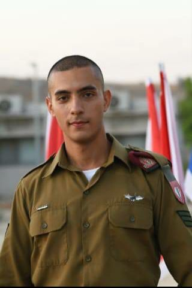
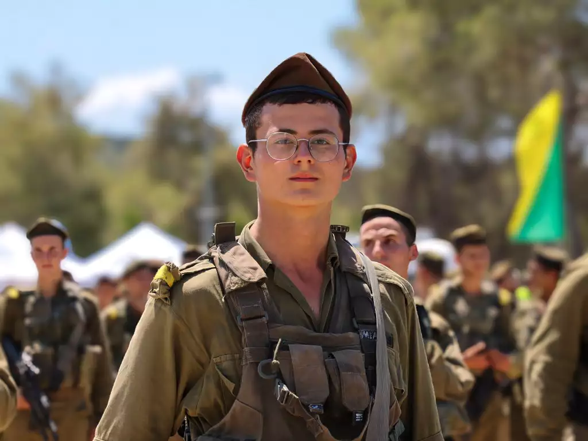
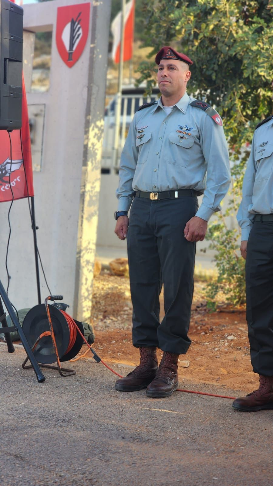

גיבורים אשר הקריבו את חייהם
ענר שפירא
לוחם סיירת הנח"ל שהיה בחופשה, מצא את עצמו עם עוד כ-30 זרים במיגונית תחת התקפת מחבלים, והצליח להדוף שמונה רימונים שהושלכו לעברם עד שנהרג.
אעמר אבו סבילה
נורה למוות בזמן שניסה להציל את אודיה סוויסה ובנותיה, בנות 3 ו-6, אחרי שאב המשפחה דולב נרצח בשעה שהיו בדרכם החוצה מהעיר.
שלמה רון
ששמע את המחבלים בפתח הבית, התיישב על הספה בסלון ביתו והעמיד פני אדם ערירי וחולה כשאשתו, בנותיו ונכדו מחכים בדממה בממ”ד. כשנכנסו המחבלים לביתו הם פגשו בו יושב על הספה, ומגלם כמו שחקן תיאטרון מיומן את הדמות הראשית במחזה שהגה. הם לא חסו עליו וירו בראשו, אך עזבו את הבית מבלי לבדוק אם מסתתרים בו בני משפחה נוספים. הוא נרצח, אך בתושייתו הציל את כל משפחתו.

בשכונה בשדרות ניהל בן קרב יריות אינטנסיבי פנים אל פנים עם חמישה מחבלים והצליח לחסל ארבעה מהם. המחבל החמישי, שנפצע, ירה לעברו ופגע בו באזור חשוף מעל האפוד הקרמי. תושבי השכונה פינו אותו לתוך בית, טיפלו בו והתפללו להצלתו. בזכותו הם ניצלו. בן 21 בנופלו.
בן רובינשטיין

מתן אברג’יל ניסה לתפוס את הרימון שנזרק לעבר הצוות שלו בנמ"ר ולזרוק אותו החוצה, אך הוא לא הצליח וקפץ עליו בגופו במטרה להציל את חבריו מהפיצוץ. הוא נפגע קשות ואמר לחבריו אחרי הפציעה: “ניסיתי להגן על כולנו ועל כל עם ישראל”. רגעים ספורים לאחר מכן הוא מת מפצעיו. חייהם של החיילים הנותרים בנמ”ר ניצלו בזכות גבורתו של מתן אברג’יל ז”ל.
מתן אברגיל

סא”ל אלי גינסברג היה בחופשת שחרור בבוקר ה-7/10/2023. שבועיים קודם לכן סיים מי שהיה בעברו קצין שייטת 13 את תפקידו כמפקד בית הספר ללוט”ר. אחרי קבלת הדיווחים על חדירות מחבלים, הוא נזעק מביתו לקרבות ביישובי העוטף, ונלחם במוצב סופה ולאחר מכן בקיבוץ בארי. סא”ל גינסברג הוביל את הלחימה בגבורה והלך ראשון לפני הכוח. הוא נפל בקרב לאחר שמחבל ירה לעברו מהשיחים, אך אומץ ליבו והקרבתו הם שסללו את הדרך לכוח מאחוריו. !
אלי גינסברג
הסברה ישראלית
ההסברה הישראלית של מדינת ישראל, הן הפעולות שנוקטת ברחבי העולם מדינת ישראל, לשם הסברת מדיניותהּ. עיקר פעילות ההסברה הישראלית היא פעילות להצדקת זכות הקיום שלה, אליה מתנגדים גופים ואנשים שונים, את מדיניות המלחמה בטרור שלה ואת מדיניותה כלפי פלסטינים, שמבוקרת עלי ידי התקשורת הבין־לאומית ועל ידי ארגוני זכויות אדם.

תרומות לישראל
גו ביידן
ארצות הברית
ארצות הברית שלחה את נושאת המטוסים ג'רלד פורד הנמצאת בים התיכון, עם צי ספינות התקיפה שלה, לעגון קרוב יותר מול חופי ישראל. ארצות הברית צפויה גם להודיע על הגדלת משלוח הנשק לישראל. ביידן העניק גיבוי מלא לישראל – כולל הבטחת סיוע צבאי, הצבת נושאת מטוסים להרתעה אסטרטגית ומשלוח תחמושת ומיירטי כיפת ברזל.
חברת דיסני
Graphic Design
החברה הודיע כי היא תתרום שני מיליון דולר לארגונים המספקים סיוע הומניטרי לנפגעי מלחמת חרבות ברזל בארץ. "בעקבות מתקפות הטרור הנוראיות נגד יהודים בישראל בסוף השבוע האחרון, כולנו חייבים לעשות מה שאנחנו יכולים כדי לתמוך באנשים החפים מפשע שחווים כל כך הרבה כאב, אלימות וחוסר ודאות - במיוחד ילדים", אמר בוב איגר, מנכ"ל החברה..

אילון מאסק
האיש העשיר בעולם והבעלים של הרשת החברתית אקס, הודיע הערב שכל הכנסות הפרסום של הפלטפורמה יועברו לבתי חולים בישראל ולסהר אדום בעזה. "עלינו לדאוג לחפים מפשע" – כתב אילון מאסק.
חברת סיילספורס
חברת סיילספורס עוקבת מקרוב אחר ההתפתחויות המחרידות ושוברות הלב המתרחשות בישראל בשבוע האחרון, והיא מחבקת את עובדיה בישראל ותומכת בהם בשעה קשה זו. החברה הודיעה על תרומה משמעותית של 3 מיליון דולרים על מנת לסייע בצרכים המיידיים שנוצרו בעקבות מתקפת הטרור ומלחמת חמאס-ישראל. הכסף נתרם ל-3 ארגונים ישראלים ובינלאומיים: איחוד הצלה, העמותה להצלת הילד, ולעמותה לעזרה מיידית לניצולי שואה, וזאת על מנת לספק סיוע בסיסי, מזון, ציוד ותמיכה נפשית לנפגעים.